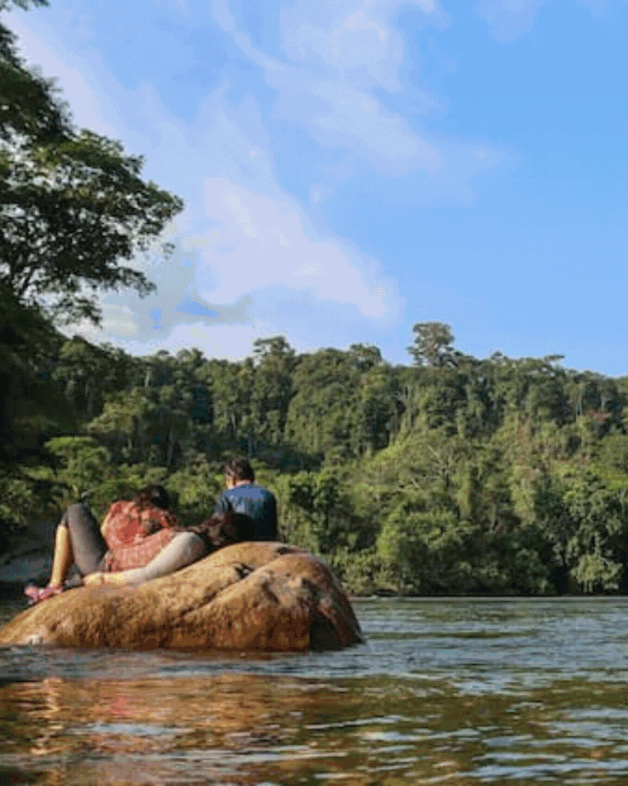

La geografía de Tena está caracterizada por su posición central en la Región Amazónica del Ecuador. La ciudad se encuentra situada en los flancos externos de la cordillera oriental de los Andes, en el valle del río Misahuallí, al sur de la Provincia de Napo, a tres horas y media de Quito y a tres horas de Ambato. Se encuentra a 510 m sobre el nivel del mar. Tena es una ciudad pequeña que en los últimos años ha aumentado notablemente su oferta turística con especial énfasis en las actividades ecológicas y de aventura. En la tabla que te presentare te ayudo con algunos lugares que puedes recorrer por primera vez y para que te diviertas en Tena espero los disfrutes:
| Nombre del sitio | Tipo de lugar | Descripción breve |
|---|---|---|
| Río Tena | Río | Confluencia de los ríos Tena y Pano, ideal para deportes acuáticos. |
| Mirador de Pano | Mirador natural | Vista panorámica del cantón y sus alrededores. |
| Cascada Las Latas | Cascada | Una caída de agua en medio de la selva, muy visitada por turistas. |
| Parque Amazónico La Isla | Parque ecológico | Área de conservación con senderos, flora y fauna nativa. |
| Laguna Azul | Laguna | Laguna de aguas claras, ideal para nadar y hacer caminatas. |

Página creada por Estefanny Lovera